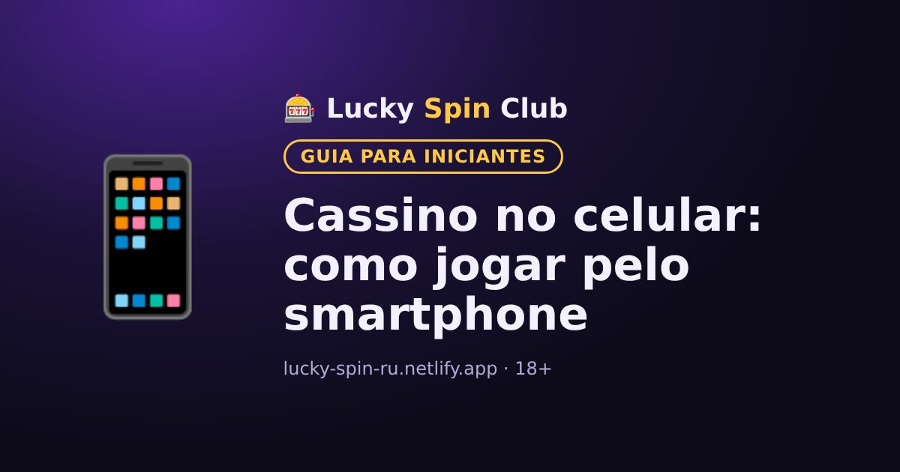

Cassino no celular: como jogar pelo smartphone

Atualizado: 6 de novembro de 2026
Hoje a maioria dos jogadores acessa o cassino pelo celular. Veja como fazer isso de forma prática e segura.
Versão mobile do site
O jeito mais simples é abrir o site do cassino no navegador do celular. A versão mobile se ajusta à tela e tem cadastro, depósitos, saques e a maioria dos jogos.
Aplicativo
Alguns cassinos oferecem aplicativo. Baixe apenas pelo link do site oficial do cassino. Não instale arquivos de fontes desconhecidas: não é seguro.
Dicas para jogar pelo celular
- Use uma senha forte e não a salve em aparelhos de outras pessoas.
- Para jogos ao vivo é preciso internet estável: de preferência Wi-Fi.
- Ative limites de depósito na sua conta: no celular é fácil perder a noção do tempo.
- Adicione o site à tela inicial para abrir com um toque.
Quer experimentar? O cadastro leva cerca de um minuto.
🎁 Cadastrar e pegar o bônusPerguntas frequentes
Preciso baixar um aplicativo?
Não necessariamente: a maioria dos cassinos funciona pela versão mobile do site no navegador.
É seguro instalar o aplicativo de um cassino?
Baixe apenas pelo link do site oficial do cassino. Arquivos de fontes desconhecidas podem ser perigosos.
Dá para jogar ao vivo pelo celular?
Sim, mas para uma transmissão estável é melhor usar Wi-Fi ou internet móvel rápida.